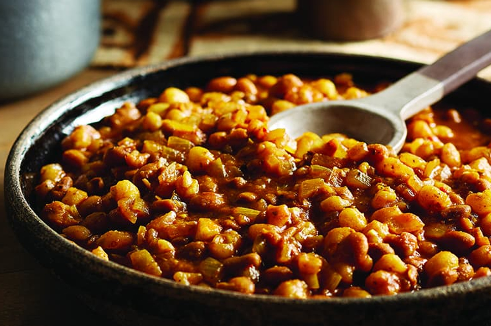

Samp and beans recipe

What is Samp and Beans
Enjoy this traditional South African classic with a side of chakalaka or by itself. For best results ensure you soak beans overnight.
What you will need
- Samp
- Beans
- Cooking oil
- Onions
- Beef Stock
- Curry powder
How to make
- Drain the samp and bean mix (after soaking overnight) and place it in a large pot covered with clean water.
- Add onion, give it a minute or two,
- Leave it to simmer slowly until nearly soft, checking it every 30 minutes.
- Add more water when necessary and stir it frequently.
- In a pot, fry the onion and green pepper in oil until soft.
- Add the Rajah Mild & Spicy Curry Powder and Robertsons Steak & Chop Spice, fry it for 1 minute.
- llow to simmer slowly until the water has evaporated, stirring occasionally. The samp and beans should have a nice creamy, soft texture.